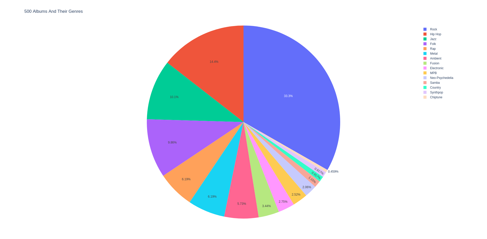
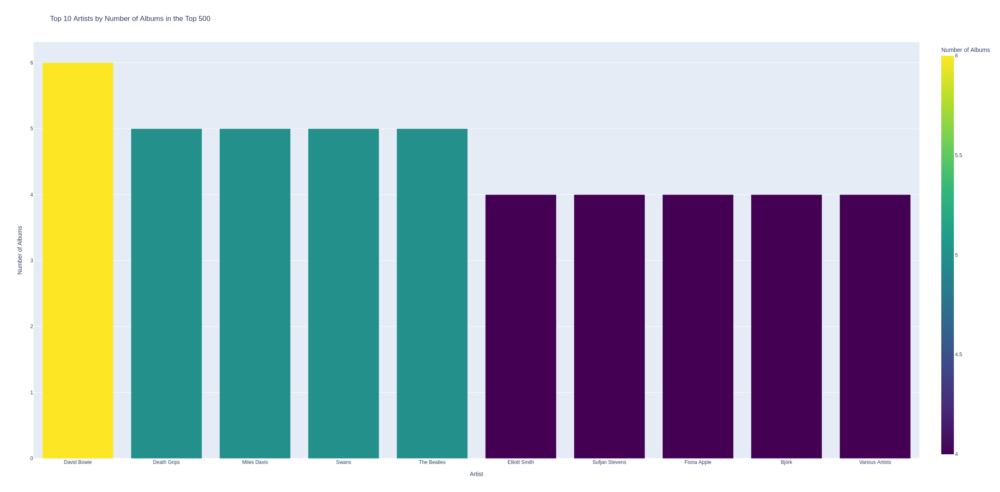

I have a dataset of the 500 highest rated albums from the Album Of The Year Website which includes the artist, popularity, release date, genre and user score. The goal of this project is to find if an album's genre affects its popularity. To determine if an album's genre does affect its popularity I will be visualsing the data from a dataset which comprises of the 500 highest rated albums on the album of the year website to determine if i can find evidence that an album's genre does or doesn't affect its popularity.

This piechart shows what genres make up the 500 album dataset. Based off this piechart, the 'rock' genre appears the most in this dataset.

This bar chart shows which artists has the most albums appearing on the dataset. Daid Bowie appears to be the most popular artist in this dataset due to him having 6 albums appearing on the dataset, more than any other artist.